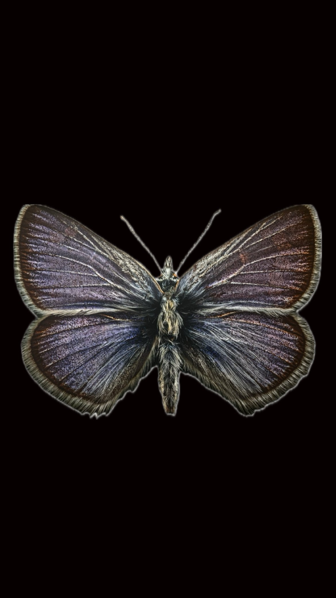

Si no entiendes lo que digo…
Siéntete en casa y detente aquí si esto resuena contigo y eres:
Y también si:
❝Bienaventurados los pobres de espíritu porque de ellos es el Reino de los Cielos❞
…no se trata de creer, sino de explorar juntos el sentido espiritual que late en cada tradición.
Recuerda: tú, allá afuera, en la gran naturaleza, ni siquiera tienes un nombre 𖤓

azul es noche, es mar, es cielo…
es brisa, es agua, es lágrima, es hielo…
cuando caigo en mi raíz, realmente no estoy cayendo…
pues azul es lago, es eterno, es sereno…
y cuando muero, realmente no estoy muriendo…
azul es constancia, es memoria, es silencio…
๑ ✷ 𖤓 ໑ ꩜
໑
Sumérgete en las tinieblas, permite al agua entrar en tu cuerpo y sentir la barrera del mar de vidrio en tus manos cuando quieres salir a respirar. Atraviesa el dolor, recuerda que fue una promesa volver a esta vida sabiendo que volverás a morir, pero no todo lo que fue tuyo se irá contigo;
dime… humana:
¿A qué quieres darle una vida eterna en esta vida antes de dormir eternamente?
¿Eres realmente capaz de compartir tu perennidad con aquello que no se va contigo?
꩜